Főoldal
Mi is a Rocket League?
A Rocket League lényegében egy autókkal játszott foci amit játszhatsz egyedül de akár négyen is tudtok együtt szórakozni benne. A játékban 5 perces játékmenetek vannak és a fő cél természetesen hogy több pontot szerezz/szerezzetek mint az ellenfél. Röviden ennyi a játék ha nagyon le akarom egyszerűsíteni. Viszont természetesen van egy kompetitív oldala is amely magas mechanikai képességet igényel illetve gyors döntéshozó képességet valamint gyors gondolkozást.
Kompetitív Rocket League illetve mint Esport!
A játék egy mmr (Matchmaking Rating) alapú ranglistát kinál, különböző játékmódokra (1v1, 2v2, 3v3, 4v4 illetve különleges játékmódok) A rangok csökkenő sorrendben a következőek:
- Supersonic Legend 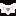
- Grand Champion III 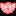
- Grand Champion II 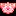
- Grand Champion I 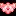
- Champion III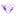
- Champion II

- Champion I

- Diamond III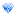
- Diamond II

- Diamond I 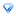
- Platinum III 
- Platinum II

- Platinum I

- Gold III

- Gold II

- Gold I

- Silver III 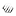
- Silver II 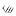
- Silver I 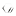
- Bronze III

- Bronze II

- Bronze I

Jómagam (Csillag Gergő) nem vagyok egy kitűnő játékos mindössze platinum 1-ig jutottam el egyelőre de kedves kolegám Fóti Dávid kiváló játékos közel a játék legmagasabb szintjére emelte már tudását (Champion II) és törekszik továbbra is emelni a játéka minőséget illetve segít jómagamnak és kedves barátunknak (Bernáth Milán) is élesíteni és fejleszteni a képességeinket hogy haladjunk előre a ranglistán.
A Rocket League-nek lassan 10 éves multja van az esport világában Az RLCS (Rocket League Championship Series) a Rocket League hivatalos nemzetközi versenysorozata, ahol a világ legjobb csapatai küzdenek meg egymással. A sorozat rendszeresen szezonokra van bontva, amelyek online és offline tornákat is tartalmaznak. A versenyek célja a pontszerzés, világranglista építése és a világbajnoki cím elnyerése.